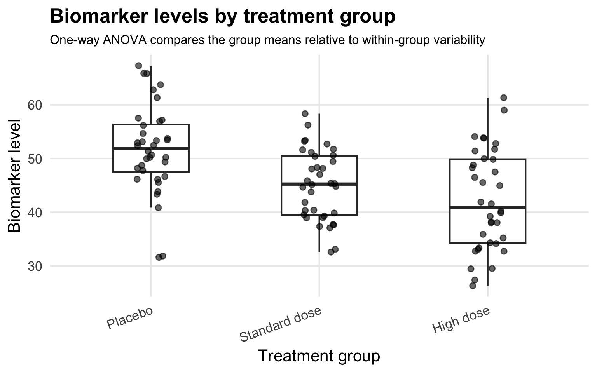
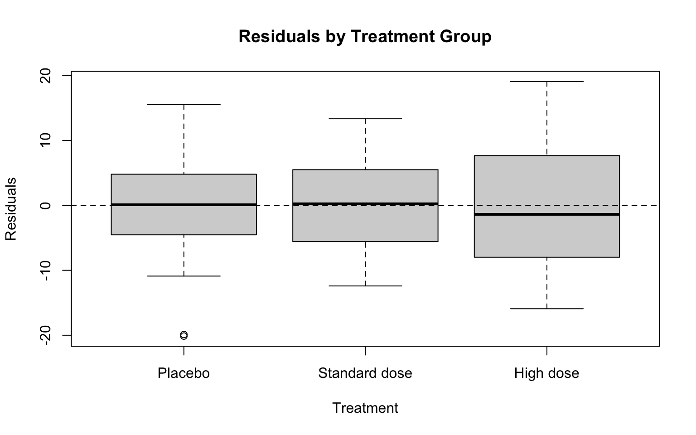
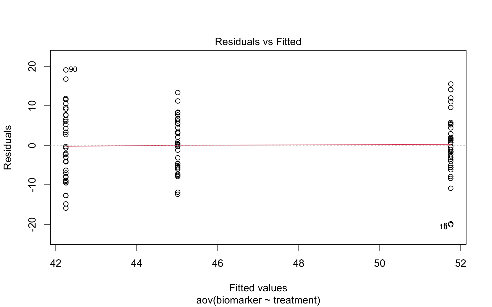
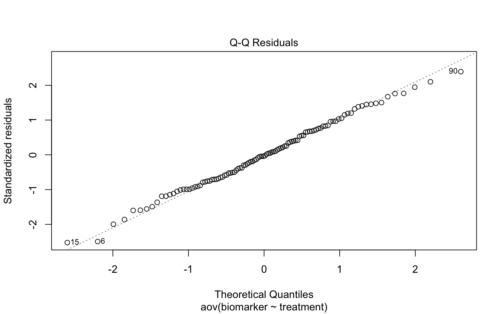
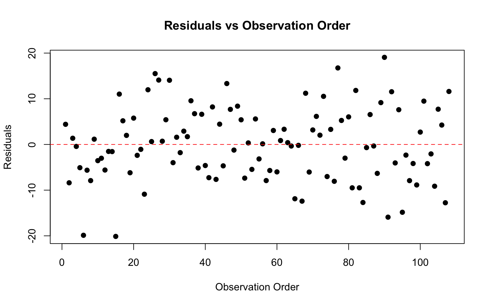

Rows: 108
Columns: 2
$ treatment <fct> Placebo, Placebo, Placebo, Placebo, Placebo, Placebo, Placeb…
$ biomarker <dbl> 56.16471, 43.36247, 53.11390, 51.32201, 46.66688, 31.87129, …
One-Way ANOVA
One-Way ANOVA
one-way ANOVA has:
One-way ANOVA model:
\[ y_{ij} = \mu + \alpha_i + \epsilon_{ij} \]
where:
Null hypothesis (H₀): all population group means are equal.
\[ \mu_1 = \mu_2 = \mu_3 = \cdots = \mu_k \]
Alternative hypothesis (\(H_A\)): at least one population group mean differs from another
Note: alternative hypothesis does not state which groups differ, instead, states that the group means are not all equal
Outcome Variable
Outcome variable is the measured quantity being compared across groups
In one-way ANOVA, the outcome is usually continuous
Biomedical examples include:
Factor
A factor is a categorical explanatory variable that assigns each observational unit to a group.
Examples of factors include:
In one-way ANOVA, there is one factor
Levels
The levels of a factor are the specific groups being compared.
If the factor is treatment group, the levels might be:
One-way ANOVA evaluates whether the population means for these levels appear equal based on the observed data
One-way ANOVA can be used when the scientific question asks whether a continuous measurement differs across categories of one grouping variable.
Examples:
Note: each question has one continuous outcome and one categorical factor
| Feature | Independent-samples t-test | One-way ANOVA |
|---|---|---|
| Outcome | Continuous | Continuous |
| Number of groups | Two groups | Two or more groups |
| Main test statistic | t statistic | F statistic |
| Null hypothesis | Two population means are equal | All population group means are equal |
| Primary result | Evidence about one mean difference | Evidence that at least one group mean differs |
Suppose a study compares mean biomarker levels across four treatment groups
Pairwise t-tests would compare:
Possible Outcome:
each test creates another opportunity for a false positive result
when there are exactly two groups: one-way ANOVA and an independent-samples t-test evaluate the same mean comparison
ANOVA extends the mean-comparison logic of the t-test to more than two groups
Scientific Question:
Do mean inflammatory biomarker levels differ across treatment groups?
Note:
outcome : biomarker level
factor : treatment group
levels : placebo, standard dose, and high dose.
Rows: 108
Columns: 2
$ treatment <fct> Placebo, Placebo, Placebo, Placebo, Placebo, Placebo, Placeb…
$ biomarker <dbl> 56.16471, 43.36247, 53.11390, 51.32201, 46.66688, 31.87129, …treatment variable : coded as a factor because it defines group membershipbiomarker variable : numeric because it is the continuous outcome being compared across groups# A tibble: 3 × 2
treatment n
<fct> <int>
1 Placebo 36
2 Standard dose 36
3 High dose 36check the number of observations in each group
group size affects the precision of group mean estimates

group_summary <- anova_data |>
group_by(treatment) |>
summarize(
n = n(),
mean_biomarker = mean(biomarker),
sd_biomarker = sd(biomarker),
.groups = "drop"
)
group_summary# A tibble: 3 × 4
treatment n mean_biomarker sd_biomarker
<fct> <int> <dbl> <dbl>
1 Placebo 36 51.8 8.20
2 Standard dose 36 45.0 6.51
3 High dose 36 42.2 9.30one-way ANOVA : asks whether group membership explains enough outcome variation to justify rejecting the equal-means null hypothesis
The total variation is separated into:
F statistic : compares these two sources of variation after accounting for their degrees of freedom
overall_mean <- mean(anova_data$biomarker)
ss_between <- anova_data |>
group_by(treatment) |>
summarize(n = n(), group_mean = mean(biomarker), .groups = "drop") |>
summarize(ss_between = sum(n * (group_mean - overall_mean)^2)) |>
pull(ss_between)
ss_within <- anova_data |>
group_by(treatment) |>
summarize(ss_within = sum((biomarker - mean(biomarker))^2), .groups = "drop") |>
summarize(ss_within = sum(ss_within)) |>
pull(ss_within)
c(ss_between = ss_between, ss_within = ss_within)ss_between ss_within
1721.581 6862.610 ss_between : measures how far group means are from the overall meanss_within : measures how far individual observations are from their own group meank <- nlevels(anova_data$treatment)
n_total <- nrow(anova_data)
df_between <- k - 1
df_within <- n_total - k
ms_between <- ss_between / df_between
ms_within <- ss_within / df_within
f_statistic <- ms_between / ms_within
p_value <- pf(f_statistic, df_between, df_within, lower.tail = FALSE)
c(
df_between = df_between,
df_within = df_within,
ms_between = ms_between,
ms_within = ms_within,
F = f_statistic,
p_value = p_value
) df_between df_within ms_between ms_within F p_value
2.000000e+00 1.050000e+02 8.607905e+02 6.535819e+01 1.317035e+01 7.879019e-06 \[ F = \frac{\text{variance between groups}}{\text{variance within groups}} \]
Df Sum Sq Mean Sq F value Pr(>F)
treatment 2 1722 860.8 13.17 7.88e-06 ***
Residuals 105 6863 65.4
---
Signif. codes: 0 '***' 0.001 '**' 0.01 '*' 0.05 '.' 0.1 ' ' 1biomarker ~ treatment : biomarker level is modeled as a function of treatment grouptreatment : factor \(\rightarrow\) R fits a model that estimates differences among treatment-group meansANOVA table usually includes:
The treatment p-value evaluates the null hypothesis that all treatment-group population means are equal
ANOVA table usually includes:
Df Sum Sq Mean Sq F value Pr(>F)
treatment 2 1722 860.8 13.17 7.88e-06 ***
Residuals 105 6863 65.4
---
Signif. codes: 0 '***' 0.001 '**' 0.01 '*' 0.05 '.' 0.1 ' ' 1ANOVA tells you at least one group mean differs
model indicates that treatment has a statistically significant effect on biomarker levels:
Note: to identify the specific group differences, perform a post-hoc multi-comparison test [Tukey’s Honest Significant Difference (HSD) test]

not a formal diagnostic plot
Goal: visually assess whether group variances are reasonably similar
residual : error or difference between an actual observed data point and the value predicted by a statistical model
residuals centered near zero in each group
similar box heights (similar variability)
no group with substantially larger spread

residuals vs Fitted (which = 1) — introduces residual diagnostics

normal Q-Q Plot (which = 2) — assesses the normality assumption

Test: plot maps model errors against the chronological sequence or physical order in which your data was collected
scale-Location Plot (which = 3) — assesses homoscedasticity
Evidence supporting independence: